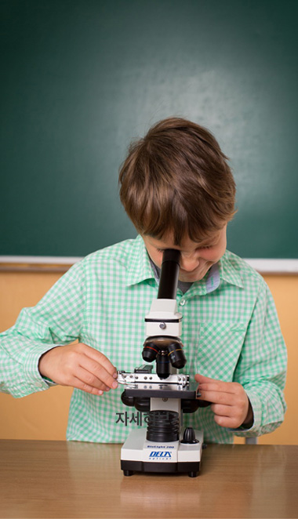
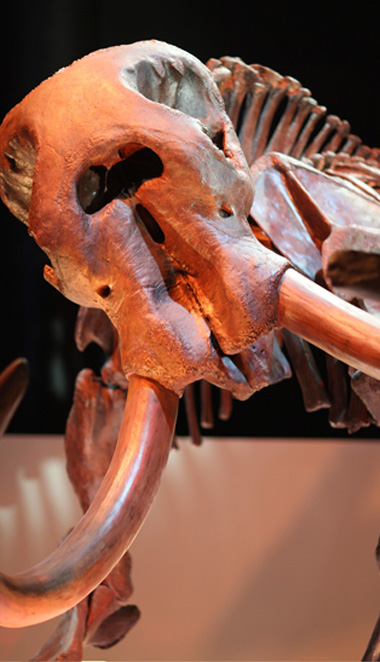
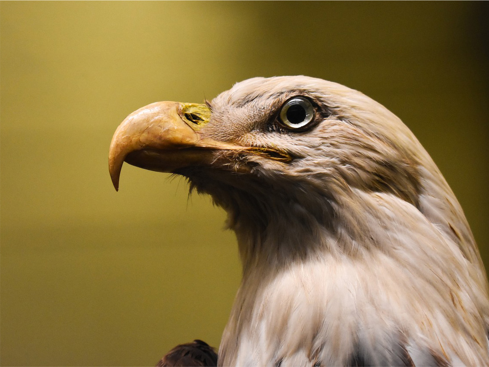
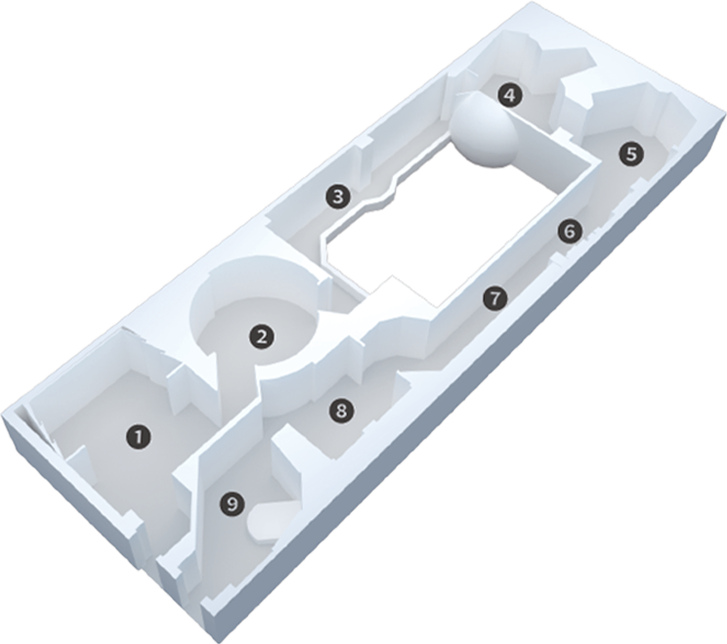

본문콘텐츠영역
Exhibition
-
- 중앙홀 소개
- 서대문 자연사 박물관의 중앙홀은 자연의 아름다움과 다양성을 만날 수 있는 주요 공간 중 하나입니다. 고객은 이곳에서 자연사의 다양한 측면을 탐험할 수 있습니다. 중앙홀은 환상적인 표본으로 장식되어 있어, 방문객들에게 시각적으로도 매력적인 경험을 제공합니다. 여기에는 자연계의 다양한 생물종들과 그들의 서식지에 관한 정보를 담은 다채로운 전시물들이 전시되어 있습니다. 이곳은 자연과 인간의 조화로운 관계에 대한 이해를 도모하고자 하는 방문객들에게 특히 추천합니다. 또한 중앙홀은 교육적인 목적으로도 활용되며, 학생들과 교육단체들에게 자연과 환경에 대한 중요성을 보다 깊이 있게 이해할 수 있는 기회를 제공합니다. 더보기
-
- 인간과 자연관 소개
- 서대문 자연사 박물관은 인간과 자연의 긴밀한 관계를 탐구하는 곳입니다. 이곳은 자연과 인간이 상호작용하고 함께 공존하는 방식을 탐구합니다. 전시물과 설명을 통해 우리가 자연에 미치는 영향과 자연이 우리에게 미치는 영향을 살펴볼 수 있습니다. 또한, 박물관은 이 관계가 우리의 삶과 문화에 미치는 영향을 보여줍니다. 이를 통해 방문객들은 자연과 인간의 조화로운 공존을 이해하고, 지속 가능한 발전에 대한 중요성을 깨닫게 됩니다. 이곳은 자연과 인간의 관계에 대한 새로운 시각을 제공하며, 지속 가능한 미래를 모색하는 곳입니다. 더보기
-
- 생명 진화관 소개
- 이곳은 과학적으로 구성된 전시물을 통해 생물의 기원과 다양한 종의 진화 과정을 보여줍니다. 방문객들은 오래 전부터 현재까지 이르는 생명체의 변화를 살펴보며 진화의 원리를 이해할 수 있습니다. 생명의 발전과 생물 다양성의 중요성에 대한 인식을 높이는 데 기여합니다. 또한, 생명체의 적응력과 다양성이 어떻게 환경과 상호작용하는지에 대한 흥미로운 통찰력을 제공합니다. 이곳은 자연과 생명에 대한 호기심을 자극하며, 과학적 지식을 확장하는 보람찬 경험을 제공합니다. 더보기
-
- 지구환경관 소개
- 서대문 자연사 박물관의 지구환경관은 환경 보전과 지구 생태계에 대한 인식을 높이는 곳입니다. 이곳은 지구의 생태계와 환경문제에 대한 다양한 측면을 다룹니다. 방문객들은 지구 온난화, 기후 변화, 자원 고갈 등의 현대적인 문제에 대해 살펴보며 지구 환경에 대한 이해를 넓힐 수 있습니다. 다양한 전시물과 인터랙티브한 활동을 통해 환경 보전의 중요성을 체감할 수 있습니다. 더보기
Event
서대문 자연사 박물관만의 특별한 이벤트에 참여해보세요
-

- 교육 프로그램
- 유치부, 초등학생을 대상으로 지연현상의 원리를 쉽게 이해할 수 있도록 꾸며진 강좌를 개설하고 있습니다. 자세히 보기
- 
- 기획전시/특별전시
- 근대 생태학의 아버지로 불리는 허친슨 교수는 진화를 연극, 생태를 극장에 비유했습니다. 이에 ‘행동’의 의미를 더한 최재천의 문장을 모티브 하여 정해진 제목애니멀 액션은 ‘동물 행동’을 통해 발견할 수 있는 근원적 가치와 목적의 의미를 담고 있습니다. 자세히 보기
-
- 디지털 뮤지엄
- 서대문자연사박물관 VR 전시관 서대문자연사박물관은 2003년 서대문구가 설립한 박물관으로 지하 1층, 지상 3층으로 각종 전시시설, 교육시설, 편의시설 등을 두루 갖추고 있으며, 지역 환경의 지질학적, 생물학적 사실에 대한 증거와 기록을 보존, 연구하며 대중에게 전시하고 있다. 자세히 보기
공룡의 뼈 화석 이미지
서대문 자연사 박물관의 특별한 전시물
박물관소개
박물관 지도
-
- 3층
- 태초에 우주는 대폭발을 하였습니다. 그 후 우주공간 에서 가스가 모여구름모양을 이루고,이 가스 구름이뭉쳐져 미행성체가 만들어지며, 이것들이 서로돌하며 깨지거나 뭉쳐서 별이 만들어 지게 되었습니다.
- 더보기
-
- 2층
- 생명이 언제 어떻게 지구상에 나타났는가? 이것은 모두가 알고자 하는 수수께끼일 뿐만 아니라 철학이나 신학의 과제이기도 한 매우 어려운 문제입니다.
- 더보기
-
- 1층
- 자연의 표현과 과 학적 연구의 현대적인 발전 사례들을 통해 새로운 시각 을 확장하며, 박물관은 교육적이고 인상적인 경험을 제공합니다.
- 더보기
-
- 중앙홀
- 전기백악기에 생존했던 아크로칸토사우루스는 몸길이 9~12m, 몸무게 2~4t에 달하며 알로사우루스과에 속하는 무서운 육식공룡으로서, 거대한 용각류 공룡도 죽일 수 있을 정도로 사납고 썩은 고기를 먹기도 했습니다.
- 더보기
- 